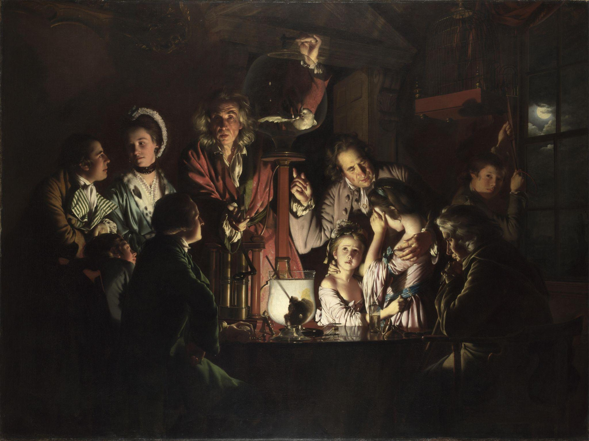

마치며
밸브 위의 손
사람이 기술을 통제하는가, 기술이 사람을 통제하는가 —
그 답은 이제,
우리가 무엇을 측정하고 어떻게 설계하는가
에 달려 있습니다
기술의 한계를 인간의 신체로 감당하던 구조를 넘어, 인간의 생명과 존엄을 지키는 데이터 체계로
감사합니다
조셉 라이트 오브 더비, 〈공기 펌프 속의 새에 대한 실험〉 (1768) · National Gallery, London